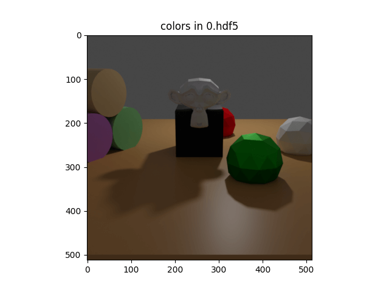
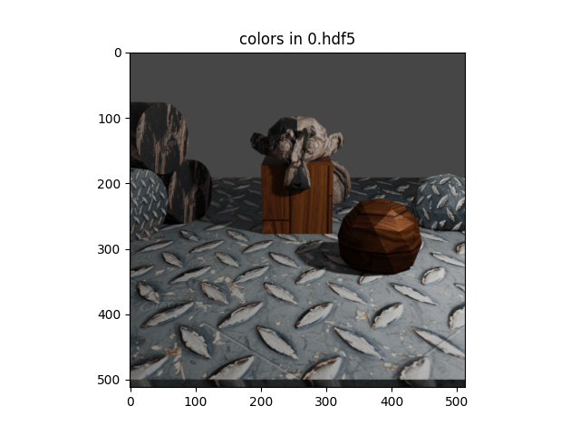
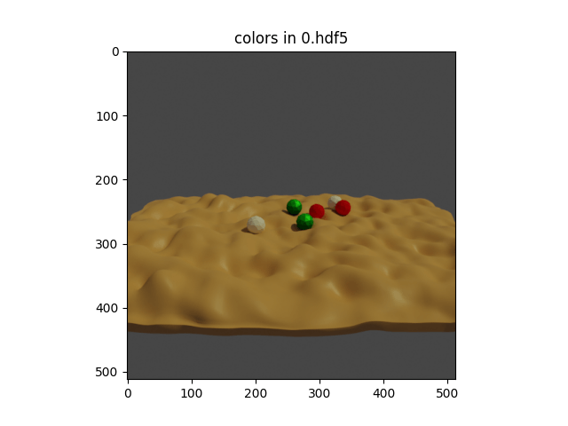

blenderproc run examples/basics/basic/main.py examples/resources/camera_positions examples/resources/scene.obj examples/basics/basic/output
即可开跑！我说婷婷，会报错：
1 2 3 4 5 6 7
It seems the freeimage library which is necessary to read .exr files cannot be found on your computer. Gonna try to download it automatically. Imageio: 'freeimage-3.15.1-win64.dll' was not found on your computer; downloading it now. Error while fetching file: <urlopen error timed out>. Error while fetching file: The read operation timed out. Error while fetching file: <urlopen error timed out>. Error while fetching file: <urlopen error timed out>.
Warning: Changed install path from /home_local\XXX... to C:\Users\XXX..., there is no /home_local/ on this machine. Using blender in C:\Users\XXX\blender\blender-3.3.0-windows-x64 Using temporary directory: C:\Users\XXX\AppData\Local\Temp\blender_proc_b830ed3583e7442cbe7cde6a0b37bd2b Blender 3.3.0 (hash 0759f671ce1f built 2022-09-07 00:44:18) Selecting render devices... Device NVIDIA GeForce RTX 4060Laptop GPU of type OPTIX found and used. Device 13th Gen Intel Core i9-13900HX of type CPU found and used. Timer 'OBJ_import' took 1.5ms Fra:0 Mem:10.46M (Peak 10.69M) | Time:00:00.16 | Mem:0.00M, Peak:0.00M | Scene, ViewLayer | Synchronizing object | Cube Fra:0 Mem:10.47M (Peak 10.69M) | Time:00:00.17 | Mem:0.00M, Peak:0.00M | Scene, ViewLayer | Synchronizing object | Suzanne
parser = argparse.ArgumentParser() parser.add_argument('camera', help="Path to the camera file, should be examples/resources/camera_positions") parser.add_argument('scene', help="Path to the scene.obj file, should be examples/resources/scene.obj") parser.add_argument('output_dir', help="Path to where the final files, will be saved, could be examples/basics/basic/output") args = parser.parse_args()
初始化 blenderproc：
1
bproc.init()
从 args.scene 中载入模型场景：
1
objs = bproc.loader.load_obj(args.scene)
载入灯光：
1 2 3 4 5
# define a light and set its location and energy level light = bproc.types.Light() light.set_type("POINT") light.set_location([5, -5, 5]) light.set_energy(1000)
载入相机：这段代码的作用是设置相机分辨率，并读取相机位置信息并转换为齐次相机-世界变换矩阵。
1 2 3 4 5 6 7 8 9 10 11 12
# define the camera resolution # 首先，调用 bproc.camera.set_resolution() 函数来定义相机的分辨率，该函数接受两个参数，即相机图像的宽度和高度。在这个示例中，我们将相机分辨率设置为 512x512。 bproc.camera.set_resolution(512, 512)
# read the camera positions file and convert into homogeneous camera-world transformation withopen(args.camera, "r") as f: for line in f.readlines(): # 使用一个 for 循环来逐行读取相机位置文件中的信息，并将每个位置信息转换为齐次变换矩阵，并通过调用 bproc.camera.add_camera_pose() 函数将其添加到 BlenderProc 中。 line = [float(x) for x in line.split()] position, euler_rotation = line[:3], line[3:6] matrix_world = bproc.math.build_transformation_mat(position, euler_rotation) bproc.camera.add_camera_pose(matrix_world)
渲染图像：
1 2 3 4 5 6 7
# activate normal and depth rendering bproc.renderer.enable_normals_output() bproc.renderer.enable_depth_output(activate_antialiasing=False) # bproc.renderer.set_noise_threshold(0.01) # this is the default value
# render the whole pipeline data = bproc.renderer.render()
# Find point of interest, all cam poses should look towards it # 通过调用 bproc.object.compute_poi(objs) 函数，计算出一组物体的几何中心点 poi，作为相机观察的焦点。 poi = bproc.object.compute_poi(objs) # Sample five camera poses # 采样了五个随机的相机位置，渲染出 5 张图 for i inrange(5): # Sample random camera location above objects # 通过调用 np.random.uniform([-10, -10, 8], [10, 10, 12]) 函数，从一个三维坐标区间中随机取得一个相机位置，其中相机位置的 x、y 坐标范围为 [-10, 10]，z 坐标范围为 [8, 12]。 location = np.random.uniform([-10, -10, 8], [10, 10, 12]) # Compute rotation based on vector going from location towards poi # 对于每一个相机位置，进一步计算其旋转矩阵 rotation_matrix，以便将相机的视线朝向 poi 的方向。 # 具体而言，调用 bproc.camera.rotation_from_forward_vec(poi - location, inplane_rot=np.random.uniform(-0.7854, 0.7854)) 函数，以相机位置和 poi 之间的向量作为前向向量，并通过 inplane_rot 参数加入少量的水平旋转随机性（其值在 [-0.7854, 0.7854] 范围内）来计算出旋转矩阵 rotation_matrix。 rotation_matrix = bproc.camera.rotation_from_forward_vec(poi - location, inplane_rot=np.random.uniform(-0.7854, 0.7854)) # Add homog cam pose based on location an rotation # 将相机位置和旋转信息组合为齐次相机-世界变换矩阵 cam2world_matrix = bproc.math.build_transformation_mat(location, rotation_matrix) # 将其添加到 BlenderProc 中，以便后续渲染时使用。这样，就实现了对场景从不同视角的渲染。 bproc.camera.add_camera_pose(cam2world_matrix)
Light sampling
Usage
1
blenderproc run examples/basics/light_sampling/main.py examples/resources/camera_positions examples/resources/scene.obj examples/basics/light_sampling/output
Visualization
1
blenderproc vis hdf5 examples/basics/light_sampling/output/0.hdf5

Code
1 2 3 4 5 6 7 8 9 10 11 12
# Define a light light = bproc.types.Light() light.set_type("POINT") # Sample its location in a shell around the point [1, 2, 3] light.set_location(bproc.sampler.shell( center=[1, 2, 3], radius_min=4, radius_max=7, elevation_min=15, elevation_max=70 )) light.set_energy(500)
# render the whole pipeline data = bproc.renderer.render()
# Collect states of all objects object_states = [] for obj in objs: object_states.append({ "name": obj.get_name(), "local2world": obj.get_local2world_mat() }) # Add states (they are the same for all frames here) data["object_states"] = [object_states] * bproc.utility.num_frames()
# Collect state of the one light light_state = { "name": light.get_name(), "local2world": light.get_local2world_mat(), "energy": light.get_energy() } # Add states (its the same for all frames here) data["light_states"] = [light_state] * bproc.utility.num_frames()
# Collect state of the camera at all frames cam_states = [] for frame inrange(bproc.utility.num_frames()): cam_states.append({ "cam2world": bproc.camera.get_camera_pose(frame), "cam_K": bproc.camera.get_intrinsics_as_K_matrix() }) # Adds states to the data dict data["cam_states"] = cam_states
这段代码的含义是：
首先，通过调用 bproc.renderer.render() 函数，对当前的场景进行渲染，并将渲染结果存储在 data 变量中。
blenderproc run examples/basics/material_manipulation/main.py examples/basics/material_manipulation/scene.obj images examples/basics/material_manipulation/output
examples/basics/material_manipulation/main.py: path to the python file.
examples/basics/material_manipulation/scene.obj: path to the object file with the basic scene.
images: path to a folder with .jpg textures to be used in the sampling process.
examples/basics/material_manipulation/output: path to the output directory.
Visualization
1
blenderproc vis hdf5 examples/basics/material_manipulation/output/0.hdf5

1 2 3 4 5 6 7
# Find all materials materials = bproc.material.collect_all()
# Find the material of the ground object ground_material = bproc.filter.one_by_attr(materials, "name", "Material.001") # Set its displacement based on its base color texture ground_material.set_displacement_from_principled_shader_value("Base Color", multiply_factor=1.5)
# Collect all jpg images in the specified directory images = list(Path(args.image_dir).absolute().rglob("material_manipulation_sample_texture*.jpg")) for mat in materials: # Load one random image image = bpy.data.images.load(filepath=str(random.choice(images))) # Set it as base color of the current material mat.set_principled_shader_value("Base Color", image)
blenderproc run examples/basics/physics_positioning/main.py examples/basics/physics_positioning/active.obj examples/basics/physics_positioning/passive.obj examples/basics/physics_positioning/output
examples/basics/physics_positioning/main.py: path to the python file.
examples/basics/physics_positioning/active.obj: path to the object file with active objects, i. e. objects which we want to participate in physics simulation.
examples/basics/physics_positioning/passive.obj: path to the object file with passive objects, i. e. objects which we do not want to participate in physics simulation, e.g. plane.
examples/basics/physics_positioning/output: path to the output directory.
Visualization
1
blenderproc vis hdf5 examples/basics/physics_positioning/output/0.hdf5

Code
1 2 3 4 5 6 7 8 9 10
# Define a function that samples the pose of a given sphere defsample_pose(obj: bproc.types.MeshObject): obj.set_location(np.random.uniform([-5, -5, 8], [5, 5, 12])) obj.set_rotation_euler(bproc.sampler.uniformSO3())
# Sample the poses of all spheres above the ground without any collisions in-between bproc.object.sample_poses( spheres, sample_pose_func=sample_pose )
# Make all spheres actively participate in the simulation # 通过循环遍历所有的球体对象 spheres，调用 obj.enable_rigidbody(active=True) 函数使其能够参与物理仿真。其中 active=True 代表该球体是主动物体，需要施加力和碰撞等物理效应。 for obj in spheres: obj.enable_rigidbody(active=True) # The ground should only act as an obstacle and is therefore marked passive. # To let the spheres fall into the valleys of the ground, make the collision shape MESH instead of CONVEX_HULL. # 将地面对象 ground 的 enable_rigidbody 函数的 active 设置为 False，表示它是被动物体，只参与碰撞等物理效应，并调整地面的碰撞形状为 MESH，以便让球体可以掉落到地面的洼地中。 ground.enable_rigidbody(active=False, collision_shape="MESH")
# Run the simulation and fix the poses of the spheres at the end # 调用 bproc.object.simulate_physics_and_fix_final_poses(min_simulation_time=4, max_simulation_time=20, check_object_interval=1) 函数来运行物理仿真并在结束时固定球体的位置。具体而言，min_simulation_time 和 max_simulation_time 分别指示物理仿真的最小和最大时间（秒），check_object_interval 则指示固定物体位置时检查位置的时间间隔（秒）。在本例中，物理仿真时间介于 4s 和 20s 之间，每秒钟检查一次物体位置并固定。（注意：如果没有启用物理，该函数将不起作用。） bproc.object.simulate_physics_and_fix_final_poses(min_simulation_time=4, max_simulation_time=20, check_object_interval=1)
# Use vertex color for texturing for mat in obj.get_materials(): mat.map_vertex_color() # Set pose of object via local-to-world transformation matrix obj.set_local2world_mat( [[0.331458, -0.9415833, 0.05963787, -0.04474526765165741], [-0.6064861, -0.2610635, -0.7510136, 0.08970402424862098], [0.7227108, 0.2127592, -0.6575879, 0.6823395750305427], [0, 0, 0, 1.0]] ) # Scale 3D model from mm to m obj.set_scale([0.001, 0.001, 0.001]) # Set category id which will be used in the BopWriter obj.set_cp("category_id", 1)
# render the whole pipeline data = bproc.renderer.render()
# Write object poses, color and depth in bop format bproc.writer.write_bop(args.output_dir, [obj], data["depth"], data["colors"], m2mm=True, append_to_existing_output=True)